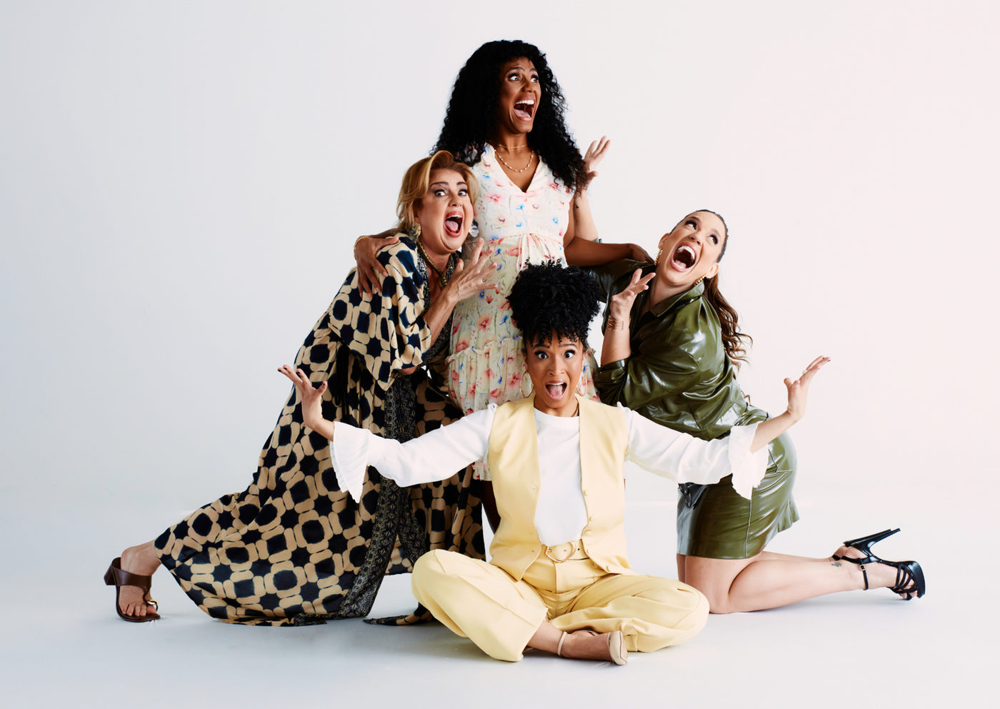

“Mães, o Musical” estreia em São Paulo em setembro com Claudia Raia na produção e direção de Jarbas Homem de Mello

Sucesso internacional, a comédia musical que celebra a maternidade chega ao Teatro das Artes com Jéssica Ellen, Helga Nemeczyk, Maria Bia e Giovana Zotti no elenco
A partir de 5 de setembro de 2025, São Paulo recebe a montagem brasileira de “Mães, o Musical” (Motherhood, the Musical), com versão de Anna Toledo e direção de Jarbas Homem de Mello. A produção assinada por Claudia Raia leva ao palco do Teatro das Artes (Shopping Eldorado) uma comédia emocionante que já encantou plateias nos Estados Unidos, Austrália e Argentina. A temporada vai até 2 de novembro, com sessões às sextas e sábados, às 20h, e aos domingos, às 18h.
Uma comédia sobre maternidade, humor e identificação
Escrito por Sue Fabisch, o espetáculo reúne música, humor e emoção para retratar diferentes fases da maternidade. Com duração de 90 minutos, a narrativa se passa em um chá de bebê, onde quatro amigas compartilham experiências, medos e alegrias do universo materno.
As personagens representam arquétipos que dialogam com diferentes realidades:
Dani (Jéssica Ellen): grávida de seu primeiro filho, ansiosa por mergulhar nesse novo universo.
Julia (Maria Bia): advogada workaholic, que equilibra maternidade e carreira.
Márcia (Giovana Zotti): mãe de cinco filhos, vivendo a maternidade de forma intensa e caótica.
Tina (Helga Nemeczyk): mãe separada, que lida com os desafios do trabalho, família e divórcio.
Com canções originais em estilo pop/rock, traduzidas para o português, “Mães, o Musical” propõe um olhar afetuoso e bem-humorado sobre os dilemas e conquistas da maternidade.
A maternidade como inspiração
Para Claudia Raia, a escolha de produzir o espetáculo é também pessoal:
“Ser mãe de dois filhos de forma tardia, aos 56 anos, despertou em mim o desejo de falar sobre esse universo com humor e verdade. Mães é uma comédia inteligente e sensível sobre um tema que todo mundo conhece. É uma celebração da vida real, daquelas mulheres que encaram os desafios da maternidade com amor, exaustão e, claro, uma boa dose de riso.”
O diretor Jarbas Homem de Mello destaca o caráter universal da peça:
“A montagem mergulha na essência da maternidade por meio de quatro amigas em fases distintas dessa jornada. A cenografia de Natália Lana e os figurinos contemporâneos de Bruno Oliveira reforçam a multiplicidade desse universo. Inspirado em um sucesso off-Broadway, o espetáculo celebra, com autenticidade e leveza, a beleza atemporal da maternidade.”
Elenco de destaque
Jéssica Ellen: atriz, cantora e compositora, protagonista de Volta por Cima (2024), com passagens marcantes por Malhação, Amor de Mãe e Justiça. Premiada no Festival de Gramado por Cabeça de Nêgo e Último Domingo, também brilhou em musicais como Meu Destino é Ser Star.
Helga Nemeczyk: atriz consagrada no teatro, TV e cinema, participou de novelas como Tieta e musicais como Chaplin, Meu Destino é Ser Star e Cinderella.
Maria Bia: atriz e cantora com 20 anos de carreira, indicada ao Prêmio FEMSA. Atuou em Miss Saigon, Hairspray e no programa Escola de Gênios.
Giovana Zotti: atriz, bailarina e cantora, com trajetória que inclui parcerias com Ana Botafogo, Miguel Falabella e participações em musicais como Hebe, Hairspray e Os Produtores.
Serviço
Mães, o Musical
📍 Local: Teatro das Artes – Shopping Eldorado (Av. Rebouças, 3970 – Pinheiros, São Paulo – SP)
📅 Temporada: de 05/09 a 02/11/2025
🕒 Sessões: sexta e sábado, às 20h; domingo, às 18h
🎟️ Ingressos: de R$ 25 a R$ 200 (à venda online)
⏱️ Duração: 90 minutos
🔞 Classificação indicativa: 12 anos